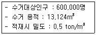
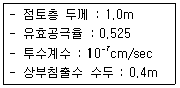
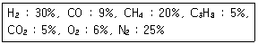
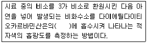
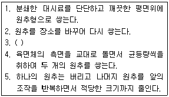
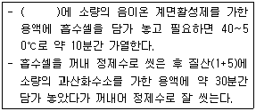
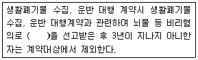

폐기물처리기사 (2012-05-20 기출문제)
1과목: 폐기물 개론
1. 쓰레기에 대한 파쇄처리 목적과 가장 거리가 먼것은?
- 밀도의 증가
- 입자크기의 균일화
- 유가물의 분리
- 비표면적의 감소
(정답률: 알수없음)

2. 어느 도시에서 1주일간의 쓰레기 수거상황을 조사한 결과가 다음과 같았다면 1일 쓰레기 발생량(kg/cap · d)은?

- 1.1
- 1.3
- 1.6
- 1.9
(정답률: 알수없음)
3. 폐타이어의 이용, 처리방법과 가장 거리가 먼 것은?
- 시멘트킬린 열이용 : 시멘트킬린 연료인 유연탄의 일부를 폐타이어로 대체하여 시멘트 제조 보조연료로 사용
- 토목공사 : 폐타이어 내부에 흙과 골재를 투입하여 사방공사에 이용
- 건류소각재 이용 : 폐타이어 원형을 소각한 후 발생한 소각재를 이용하여 카본블랙 제조
- 고무분말 : 폐타이어를 분쇄하여 고무분말을 만들고 고무분말을 탈황하여 재생고무를 생산
(정답률: 알수없음)
4. 함수율 60%의 폐기물 5ton을 건조시켜 함수율 20%로 하였다면 이때의 폐기물 중량은? (단, 비중은 1.0 기준)
- 1.5ton
- 2.0ton
- 2.5ton
- 3.0ton
(정답률: 알수없음)
5. 어떤 폐기물의 압축 전 밀도가 0.5t/m3이다. 압축 후 밀도가 0.9t/m3로 변했다면 부피감소율은?
- 41.5%
- 44.5%
- 47.5%
- 49.5%
(정답률: 알수없음)
6. 청소상태의 평가법 중 서비스를 받는 사람들의 만족도를 설문조사하여 계산되는 지수의 약자로 맞는 것은?
- SEI
- CEI
- USI
- ESI
(정답률: 알수없음)
7. 관거 수거에 대한 다음 설명 중 옳지 않는 것은?
- 현탁물 수송은 관의 마모가 크고 동력소모가 많은 것이 단점이다.
- 캡슐수송은 쓰레기를 충전한 캡슐을 수송관내에 삽입하여 공기나 물의 흐름을 이용하여 수송하는 방식이다.
- 공기수송은 공기의 동압에 의해 쓰레기를 수송하는 것으로서 진공수송과 가압수송이 있다.
- 공기수송은 고층주택밀집지역에 적합하며 소음방지시설 설치가 필요하다.
(정답률: 59%)
8. 다음과 같은 조성의 폐기물의 저위발열량(kcal/kg)을 Dulong 식을 이용하여 계산한 값은? [조성(%) : 휘발성고형물=50, 회분=50 이며, 휘발성 고형물의 원소분석결과는 C=50, H=30, O=10, N=10이다.] (단, 탄소,수소,황의연소발열량은 각각 8100kcal/kg, 34000kcal/kg, 2500kcal/kg으로 한다.)
- 약 5200kcal/kg
- 약 5700kcal/kg
- 약 6100kcal/kg
- 약 6400kcal/kg
(정답률: 알수없음)
9. 수소 10.0%, 수분 0.5% 인 중유의 고위 발열량이 10,500kcal/kg일 때, 저위발열량은?
- 9685kcal/kg
- 9793kcal/kg
- 9857kcal/kg
- 9957kcal/kg
(정답률: 알수없음)
10. 물렁거리는 가벼운 물질로부터 딱딱한 물질을 선별하는데 사용하며 경사진 컨베이어를 통해 폐기물을 주입시켜 천천히 회전하는 드럼위에 떨어뜨려 분류하는 방법은?
- Stoners
- Secators
- Conveyor sortion
- Jigs
(정답률: 91%)
11. 인구 32,000명의 어느 도시에서 쓰레기를 2일마다 수거하는데 적재용량 8m3인 트럭 15대가 동원된다. 1인당 1일 쓰레기 배출량이 0.82kg 일 때 쓰레기의 밀도는?
- 404kg/m3
- 416kg/m3
- 437kg/m3
- 479kg/m3
(정답률: 알수없음)
12. 함수율이 75%인 하수슬러지 20ton과 함수율 28%인 1000ton의 폐기물과 섞어서 함께 처리하고자 한다. 이 혼합 폐기물의 함수율은?
- 29%
- 33%
- 37%
- 41%
(정답률: 알수없음)
13. 투입량이 1.0t/hr이고, 회수량이 600kg/hr(그중 회수대상물질은 550kg/hr)이며 제거량은 400kg/hr (그중 회수대상물질은 70kg/hr)일 때 선별효율은? (단, Rietema 식 적용)
- 87%
- 84%
- 79%
- 76%
(정답률: 알수없음)
14. 다음 중 폐기물 발생량 조사 방법에 해당되는 것은?
- 물질수지법(material balance method)
- 경향법(trend method)
- 동적모사법(dynamic simulation method)
- 회귀법(regression method)
(정답률: 알수없음)
15. 분뇨의 특성 중 옳지 않은 것은?
- 분뇨에 포함된 협잡물의 양은 발생지역에 따라 차이가 크다.
- 고액 분리가 용이하다.
- 분과 뇨(분:뇨)의 고형질의 비는 7:1정도이다.
- 분뇨의 비중은 1.02정도이며 질소화합물 함유도가 높다.
(정답률: 알수없음)
16. 폐기물 감량을 위해 함수율이 98%인 폐기물을 함수율이 80%가 되도록 탈수 한 경우, 탈수 후 남은 폐기물의 무게는 처음 무게의 몇 % 인가?
- 10%
- 18%
- 30%
- 38%
(정답률: 알수없음)
17. 어느 쓰레기의 입도분석결과 입도 누적곡선상의 10%, 30%, 60%, 80%의 입경이 각각 0.5mm, 0.8mm, 1.5mm, 2.0mm이었다면 곡률계수는?
- 0.63
- 0.75
- 0.85
- 0.96
(정답률: 알수없음)
18. 일반적으로 적환장을 설치하는 경우와 가장 거리가 먼 것은?
- 저밀도 거주지역이 존재할 때
- 상업지역에서 폐기물 수집에 소형 용기를 많이 사용할 때
- 불법투기와 다량의 어지러진 쓰레기들이 발생할 때
- 슬러지 수송이나 공기수송 방식이 적용되지 않을 때
(정답률: 알수없음)
19. 쓰레기 중 가연성분이30%(중량기준)이다. 밀도가 620kg/m3인 쓰레기 5m3의 가연성분의 중량은?
- 650kg
- 780kg
- 870kg
- 930kg
(정답률: 알수없음)
20. 채취한 쓰레기 시료에 대한 성상분석 절차 중 가장 먼저 이루어지는 것은?
- 전처리
- 분류
- 건조
- 밀도측정
(정답률: 알수없음)
2과목: 폐기물 처리 기술
21. 폐기물 고형화 방법 중 배기가스를 탈황시킬 때 발생되는 슬러지(FGD 슬러지)의 처리에 많이 이용되는 것은?
- 피막 형성법
- 시멘트 기초법
- 석회 기초법
- 자가 시멘트법
(정답률: 알수없음)
22. 플라스틱을 다시 활용하는 방법과 가장 거리가 먼 것은?
- 열분해 이용법
- 용융고화재생 이용법
- 유리화 이용법
- 파쇄 이용법
(정답률: 알수없음)
23. 유기성 폐기물로부터 에너지회수를 위한 열분해 처리 공법에 대한 설명으로 옳지 않은 것은?
- 소각처리에 비해 배가스량이 적다.
- 소각처리에 비해 황 및 중금속이 회분 속에 고정되는 비율이 적다.
- 소각처리에 비해 상대적으로 저온이기 때문에 NOx의 발생량이 적다.
- 환원성 분위기가 유지되므로 Cr+3이 Cr+6로 변화되기 어렵다.
(정답률: 알수없음)
24. 보통 포틀랜드 시멘트의 화학성분 중 가장 많은 부분을 차지하고 있는 것은?
- 산화철(Fe2O3)
- 알루미나(Al2O3)
- 규산(SiO2)
- 석회(CaO)
(정답률: 알수없음)
25. 도랑식(trench)으로 밀도가 0.55t/m3 인 폐기물을 매립하려고 한다. 도랑의 깊이가 2m 이고, 다짐에 의해 폐기물을 2/3로 압축시킨다면 도랑 1m2 당 매립할 수 있는 폐기물은 몇 ton 인가?(단, 기타 조건은 고려 안함)
- 2.55
- 2.35
- 1.65
- 1.45
(정답률: 알수없음)
26. 연직차수막과 표면차수막의 비교로 옳지 않은 것은?
- 지하수 집배수시설의 경우 연직차수막은 불필요하나 표면차수막은 필요하다.
- 연직차수막은 지하에 매설하기 때문에 차수성 확인이 어렵다.
- 연직차수막은 차수막 단위면적당 공사비는 싸지만 총공사비로는 비싸다.
- 연직차수막은 차수막 보강시공이 가능하다.
(정답률: 알수없음)
27. 유기성 폐기물의 생물학적 처리와 관련한 미생물에 대한 용어 중 종속영양계인 화학 종속영양계 미생물의 에너지원과 탄소원으로 옳은 것은?
- 에너지원: 유기 산화 환원반응, 탄소원: CO2
- 에너지원: 무기 산화 환원반응, 탄소원: CO2
- 에너지원: 유기 산화 환원반응, 탄소원: 유기탄소
- 에너지원: 무기 산화 환원반응, 탄소원: 유기탄소
(정답률: 알수없음)
28. 매립지에서 유기물의 완전 분해식을 C68H111O50N+aH2O⇒bCH4+33CO2+NH3로 가정할 때 유기물 200kg을 완전 분해시 소모되는 물의 양은?
- 42 kg H2O
- 33 kg H2O
- 23 kg H2O
- 15 kg H2O
(정답률: 알수없음)
29. 매립지에서 침출된 침출수 농도가 반으로 감소하는데 약 3년이 걸린다면 이 침출수 농도가 90% 분해되는데 걸리는 시간(년)은? (단, 일차반응 기준)
- 6년
- 8년
- 10년
- 12년
(정답률: 알수없음)
30. 다음과 같은 조건은 경우 침출수가 차수층을 통과하는 시간은?

- 약 6년
- 약 8년
- 약 10년
- 약 12년
(정답률: 알수없음)
31. 질소가 생물학적인 탈질제거공정에 의해 처리될 때 질소의 최종 제거물 형태는?
- NO3-
- NH3
- N2
- 잉여슬러지
(정답률: 알수없음)
32. 다음 중 토양 층위를 나타내는 층위 영역에 해당되지 않는 것은?
- O층
- B층
- R층
- D층
(정답률: 알수없음)
33. C6H12O6로 구성된 유기물 3kg이 혐기성 미생물에 의해 완전히 분해되었을 때 메탄의 이론적 발생량은? (단, 표준 상태 기준)
- 1.12 Sm3
- 1.62 Sm3
- 2.34 Sm3
- 3.45 Sm3
(정답률: 알수없음)
34. 퇴비화에 사용되는 통기개량제의 종류별 특성으로 옳지 않는 것은?
- 볏집 : 칼륨분이 높다.
- 톱밥 : 주성분이 분해성 유기물이기 때문에 분해가 빠르다.
- 파쇄목편 : 폐목재내에 퇴비화에 영향을 줄 수 있는 유해물질의 함유 가능성이 있다.
- 왕겨(파쇄) : 발생기간이 한정되어 있기 때문에 저류공간이 필요하다.
(정답률: 알수없음)
35. 매립지에 흔히 쓰이는 합성 차수막의 종류인 Neoprene(CR)에 관한 내용으로 옳지 않는 것은?
- 대부분의 화학물질에 대한 저항성이 높다.
- 마모 및 기계적 충격에 강하다.
- 접합이 용이하다.
- 가격이 비싸다.
(정답률: 알수없음)
36. 고화처리 방법인 석회기초법의 장단점으로 옳지 않는 것은?
- pH가 낮을 때 폐기물성분의 용출가능성이 증가한다.
- 탈수가 필요하다.
- 석회가격이 싸고 널리 이용된다.
- 두 가지 폐기물을 동시에 처리할 수 있다.
(정답률: 70%)
37. 완전히 건조된 고형분의 비중이 1.3 이며, 건조이전의 슬러지 내 고형분 함량이 42%일 때 건조이전 슬러지 케익의 비중은?
- 약 1.042
- 약 1.107
- 약 1.132
- 약 1.163
(정답률: 알수없음)
38. 폐기물 매립시 사용되는 인공복토재의 조건으로 옳지 않는 것은?
- 연소가 잘 되지 않아야 한다.
- 살포가 용이하여야 한다.
- 투수계수가 높아야 한다.
- 미관상 좋아야 한다.
(정답률: 알수없음)
39. 퇴비화 대상 유기물질의 화학식이 C99H148O59N 이라고 하면, 이 유기물질의 C/N비는?
- 64.9
- 84.9
- 104.9
- 124.9
(정답률: 알수없음)
40. 퇴비화의 영향인자인 C/N비에 관한 내용으로 옳지 않은 것은?
- 질소는 미생물 생장에 필요한 단백질합성에 주로 쓰인다.
- 보통 미생물 세포의 탄질비는 25~50 정도이다.
- 탄질비가 너무 낮으면 암모니아 가스가 발생한다.
- 일반적으로 퇴비화 탄소가 많으면 퇴비의 pH를 낮춘다.
(정답률: 30%)
3과목: 폐기물 소각 및 열회수
41. 주성분이 C10H17O6N인 활성슬러지 폐기물을 소각처리하려고 한다. 폐기물 3kg당 필요한 이론적 공기의 무게는? (단, 공기 중 산소량은 중량비로 23%)
- 약 23 kg
- 약 19 kg
- 약 15 kg
- 약 12 kg
(정답률: 알수없음)
42. 가정에서 발생되는 쓰레기를 소각시킨 후 재의 중량은 1/5이 발생되었다. 이 때 100톤을 소각하여 소각재 부피가 20m3이 되었다면 소각재의 밀도는?
- 2.0톤/m3
- 1.5톤/m3
- 1.0톤/m3
- 0.5톤/m3
(정답률: 알수없음)
43. 분자식 CmHn인 탄화수소가스 1Sm3의 완전연소에 필요한 이론공기량(Sm3)은?
- 4.76m + 1.19n
- 5.67m + 0.73n
- 8.89m + 2.67n
- 1.867m + 5.67n
(정답률: 알수없음)
44. 어떤 폐기물의 원소조성 성분을 분석해보니 C:51.9%, H: 7.62%, O: 38.15%, N: 2.0%, S: 0.33% 이었다면 고위발열량 Hh은? (단, Dulong 식으로 계산)
- 약 8800 kcal/kg
- 약 7200 kcal/kg
- 약 6100 kcal/kg
- 약 5200 kcal/kg
(정답률: 알수없음)
45. 탄소, 수소의 중량조성이 각각 86, 14%인 액체연료를 매시 15kg 연소하는 경우 배기가스의 분석치는 CO2 10.5%, O2 5.5%, N2 84%이었다. 이 경우 매시 실제 필요한 공기량은?
- 약 165 Sm3/hr
- 약 225 Sm3/hr
- 약 325 Sm3/hr
- 약 415 Sm3/hr
(정답률: 알수없음)
46. 메탄의 저위발열량이 8,540 kcal/Sm3으로 계산되었다면 고위발열량의 측정치는? (단, 수증기의 증발 잠열은 480 kcal/Sm3)
- 9100 kcal/Sm3
- 9200 kcal/Sm3
- 9500 kcal/Sm3
- 9700 kcal/Sm3
(정답률: 알수없음)
47. 소각로의 1일 쓰레기 처리량이 200톤인 경우 하루의 가동시간이 10시간이면 소요되는 화상면적은? (단, 화상부하는 800kg/m2 · hr 이다.)
- 25m2
- 35m2
- 45m2
- 55m2
(정답률: 59%)
48. 폐기물을 소각하는 과정에서 발생하는 질소산화물(NOx)을 연소 조절을 통해 저감시키는 방법으로 옳지 않는 것은?
- 순산소 연소
- 연소부분의 냉각
- 2단 연소
- 배기가스 재순환
(정답률: 알수없음)
49. 소각로 본체의 형식 중 병류식에 관한 설명으로 옳지 않는 것은?
- 폐기물의 이송방향과 연소가스의 흐름방향이 같은 형식이다.
- 수분이 적고 저위발열량이 높은 폐기물에 적합하다.
- 건조대에서의 건조효율이 저하될 수 있다.
- 폐기물의 질이나 저위발열량 변동이 심한 경우에 사용한다.
(정답률: 알수없음)
50. 기체연료에 관한 내용으로 옳지 않는 것은?
- 적은 과잉공기(10~20%)로 완전연소가 가능하다.
- 유황 함유량이 적어 SO2 발생량이 적다.
- 연료의 예열과 저질연료로 고온을 얻기가 어렵다.
- 취급시 위험성이 크다.
(정답률: 알수없음)
51. 탄소 84%, 수소 15%, 황 1%인 폐기물을 공기비 1.2로 완전 연소하였다. 건조 연소가스 중의 SO2 함량은? (단, 표준 상태 기준, 황은 모두 SO2 로 변환)
- 약 0.⑤5%
- 약 0.155%
- 약 0.255%
- 약 0.355%
(정답률: 40%)
52. 일반적으로 과열기의 중간 또는 뒤쪽에 배치되어 증기 터어빈 속에서 팽창하여 포화증기 도달한 증기를 도중에서 이끌어내어 그 압력으로 다시 가열하여 터어빈에 되돌려 팽창시키는 열교환기는?
- 재열기
- 절탄기
- 공기예열기
- 압열기
(정답률: 알수없음)
53. 일반적 착화온도에 관한 내용으로 옳지 않는 것은?
- 연료의 분자구조가 간단할수록 착화온도는 높아진다.
- 연료의 화학적 발열량이 클수록 착화온도는 낮다.
- 연료의 화학결합 활성도가 작을수록 착화온도는 낮다.
- 연료의 화학반응성이 클수록 착화온도는 낮다.
(정답률: 70%)
54. 다음 조성의 기체연료 1Sm3을 완전연소 시키기 위해 필요한 이론공기량(Sm3/Sm3)은?

- 2.85
- 3.75
- 4.35
- 5.65
(정답률: 알수없음)
55. 유동층 소각로의 장, 단점으로 옳지 않는 것은?
- 가스의 온도가 높고 과잉공기량이 많아 NOx배출이 많다.
- 투입이나 유동화를 위해 파쇄가 필요하다.
- 연소효율이 높아 미연소분의 배출이 적다.
- 반응시간이 빨라 소각시간이 짧다.(로 부하율이 높다)
(정답률: 알수없음)
56. 다단로방식 소각로의 장단점으로 옳지 않는 것은?
- 유해폐기물의 완전분해를 위한 2차 연소실이 필요없다.
- 분진발생량이 높다.
- 휘발성이 적은 폐기물 연소에 유리하다.
- 체류시간이 길기 때문에 온도반응이 더디다.
(정답률: 알수없음)
57. 실제공기량과 이론공기량의 비를 m(과잉공기비)이라 한다. 연소 후 배기가스 중 7%의 O2가 함유되어 있다면 m은? (단, 기체연료의 연소, 완전연소로 가정함)
- 약 1.10
- 약 1.20
- 약 1.30
- 약 1.50
(정답률: 알수없음)
58. 표준상태에서 CO2농도가 0.01%일 때 mg/m3의 농도는?
- 138
- 164
- 196
- 236
(정답률: 알수없음)
59. 소각로에서 발생하는 유해가스 처리시설인 사이클론에 관한 일반적 내용으로 옳지 않는 것은?
- 압력손실(80~100mmH2O)이 비교적 적다.
- 고온가스의 처리가 가능하다.
- 분진량과 유량의 변화에 민감하다.
- 미세입자의 채집효율이 높다.
(정답률: 알수없음)
60. 폐지 250kg을 소각하고자 한다. 이론공기량(Sm3)은? (단, 폐지의 성분은 모두 셀룰로오스(C6H10O5)로 가정함)
- 약 990
- 약 1270
- 약 1530
- 약 1720
(정답률: 알수없음)
4과목: 폐기물 공정시험기준(방법)
61. 자외선/가시선 분광법으로 구리를 측정할 때 간섭물질에 관한 내용으로 옳은 것은?
- 비스무트(Bi)가 구리의 양과 같거나 큰 경우에는 황색을 나타내어 방해한다.
- 비스무트(Bi)가 구리의 양보다 2배 이상 존재할 경우에는 황색을 나타내어 방해한다.
- 비스무트(Bi)가 구리의 양과 같거나 큰 경우에는 청색을 나타내어 방해한다.
- 비스무트(Bi)가 구리의 양보다 2배 이상 존재할 경우에는 청색을 나타내어 방해한다.
(정답률: 28%)
62. 수소이온농도를 유리전극법으로 측정할 때 적용 범위 및 간섭물질에 관한 설명으로 옳지 않는 것은?
- 적용범위 : 시험기준으로 pH를 0.01까지 측정한다.
- pH 10 이상에서 나트륨에 의해 오차가 발생할 수 있는데 이는 '낮은 나트륨 오차 전극'을 사용하여 줄일 수 있다.
- 유리전극을 일반적으로 용액의 색도, 탁도에 영향을 받지 않는다.
- 유리전극은 산화 및 환원성 물질이나 염도에는 간섭을 받는다.
(정답률: 알수없음)
63. 강열감량 및 유기물함량(중량법) 측정에 대한 설명으로 옳지 않은 것은?
- 채취된 시료는 24시간 이내에 증발처리를 하여야 하나 최대한 7일을 넘기지 말아야 한다.
- 도가니 또는 접시를 실험전 미리 600±25℃에서 2시간 강열하고 데시케이터 안에서 방냉한 다음 그 무게를 정확히 단다.
- 용기내의 시료에 25% 질산암모늄용액을 넣어 시료를 적시고 천천히 가열하여 탄화시킨다.
- 유 기 물 함 량 ( % ) = [ 휘 발 성 고 형 물 ( % ) / 고 형 물(%)]×100 (단, 휘발성고형물(%)=강열감량(%)-수분(%))
(정답률: 알수없음)
64. 감염성 미생물 검사법과 가장 거리가 먼 것은?
- 아포균 검사법
- 최적확수 검사법
- 세균배양 검사법
- 멸균테이프 검사법
(정답률: 알수없음)
65. 다음은 자외선/가시선 분광법에 의한 비소의 측정에 관한 내용이다. ( )안에 내용으로 옳은 것은?

- 수산화나트륨 용액
- 디페닐카르바지드 용액
- 과산화수소수 용액
- 피리딘 용액
(정답률: 알수없음)
66. 8톤 차량에 적재되어 있는 폐기물의 시료 채취수는?
- 4개
- 6개
- 8개
- 9개
(정답률: 67%)
67. 용출시험방법의 용출조작기준에 대한 설명으로 옳은 것은?
- 진탕기의 진폭은 3~4cm로 한다.
- 진탕기의 진탕회수는 매분당 약 100회로 한다.
- 진탕기를 사용하여 6시간 연속 진탕한 다음 1.0㎛의 유리섬유여지로 여과한다.
- 여과가 어려운 경우 농축기를 사용하여 20분 이상 농축 분리한 다음 상등액을 적당량 취하여 용출 시험용 검액으로 한다.
(정답률: 알수없음)
68. 기체크로마토그래피로 유기인을 측정할 때 시료 관리 기준으로 옳은 것은?
- 시료채취 후 추출하기 전까지 4℃ 냉암소에서 보관하고 7일 이내에 추출하고 21일 이내에 분석한다.
- 시료채취 후 추출하기 전까지 4℃ 냉암소에서 보관하고 7일 이내에 추출하고 40일 이내에 분석한다.
- 시료채취 후 추출하기 전까지 pH 4 이하로 보관하고 7일 이내에 추출하고 21일 이내에 분석한다.
- 시료채취 후 추출하기 전까지 pH 4 이하로 보관하고 7일 이내에 추출하고 40일 이내에 분석한다.
(정답률: 40%)
69. 다음은 시료의 분할채취방법인 교호삽법 작업순서에 관한 내용이다. ( )안에 옳은 내용은?

- 원추를 눌러 평평하게 만들고 가로 4등분, 세로 5등분하여 육면체로 쌓는다.
- 원추에서 일정량을 취하여 장방형으로 도포하고 계속하여 일정량을 취하여 그 위에 입체로 쌓는다.
- 원추의 꼭지를 수직으로 눌러서 부채꼴로 한 후 평평하게 만들고 도포하여 입체로 쌓는다.
- 원추에서 일정량을 취하여 사등분 한 후 계속 도포하여 입체로 쌓는다.
(정답률: 알수없음)
70. 원자흡수분광광도법으로 구리를 측정할 때 정밀도는? (단, 정량한계는 0.008mg/L)
- RSD : ±10 이내
- RSD : ±15 이내
- RSD : ±20 이내
- RSD : ±25 이내
(정답률: 알수없음)
71. 시료 준비를 위한 회화법에 관한 기준으로 옳은 것은?
- 목적성분이 400℃ 이상에서 회화되지 않고 쉽게 휘산될 수 있는 시료에 적용
- 목적성분이 400℃ 이상에서 휘산되지 않고 쉽게 휘산될 수 있는 시료에 적용
- 목적성분이 600℃ 이상에서 회화되지 않고 쉽게 휘산될 수 있는 시료에 적용
- 목적성분이 600℃ 이상에서 휘산되지 않고 쉽게 휘산될 수 있는 시료에 적용
(정답률: 알수없음)
72. 다음은 6가크롬을 자외선/가시선 분광법으로 측정시 흡수셀 세척에 관한 내용이다. ( )안에 내용으로 옳은 것은?

- 과망간산칼륨용액(2W/V%)
- 질산암모늄용액(2W/V%)
- 질산나트륨용액(2W/V%)
- 탄산나트륨용액(2W/V%)
(정답률: 알수없음)
73. 자외선/가시선 분광법에 의한 크롬 분석에 관한 내용으로 옳지 않은 것은?
- 과망간산칼륨으로 크롬이온 전체를 6가 크롬으로 산화시킨다.
- 알칼리성에서 다이페닐카바자이드와 반응하여 생성되는 적자색의 착화합물의 흡광도를 540nm에서 측정한다.
- 시료 중 철이 2.5mg 이하로 공존할 경우에는 다이페닐카바자이드용액을 넣기 전에 피로인산 나트륨· 10수화물용액(5%) 2mL를 넣어 주면 간섭을 줄일 수 있다.
- 정량범위는 0.002~0.⑤mg 범위이다.
(정답률: 알수없음)
74. X선 회절기법으로 석면을 측정할 때 정량범위는?
- X선 회절기로 판단할 수 있는 석면의 정량범위는 0~100.0 wt% 이다.
- X선 회절기로 판단할 수 있는 석면의 정량범위는 0.1~100.0 wt% 이다.
- X선 회절기로 판단할 수 있는 석면의 정량범위는 1~100.0 wt% 이다.
- X선 회절기로 판단할 수 있는 석면의 정량범위는 10~100.0wt% 이다.
(정답률: 알수없음)
75. 크롬을 원자흡수분광광도법으로 분석할 때 공기-아세틸렌 불꽃은 철, 니켈 등의 공존물질에 의한 간섭이 크다. 이를 억제하는 방법으로 가장 옳은 것은?
- 황산나트륨을 1% 정도 넣어서 측정한다.
- 질산나트륨을 1% 정도 넣어서 측정한다.
- 황산나트륨을 3% 정도 넣어서 측정한다.
- 질산나트륨을 3% 정도 넣어서 측정한다.
(정답률: 알수없음)
76. 기기검출한계(IDL)에 관한 설명으로 옳은 것은?
- 시험분석 대상물질을 기기가 검출할 수 있는 최소한의 농도 또는 양으로서 바탕시료를 반복 측정 분석한 결과를 표준편차에 2배한 값을 말한다.
- 시험분석 대상물질을 기기가 검출할 수 있는 최소한의 농도 또는 양으로서 바탕시료를 반복 측정 분석한 결과의 표준편차에 3배한 값을 말한다.
- 시험분석 대상물질을 기기가 검출할 수 있는 최소한의 농도 또는 양으로서 바탕시료를 반복 측정 분석한 결과의 표준편차에 5배한 값을 말한다.
- 시험분석 대상물질을 기기가 검출할 수 있는 최소한의 농도 또는 양으로서 바탕시료를 반복 측정 분석한 결과의 표준편차에 10배한 값을 말한다.
(정답률: 알수없음)
77. 수분 및 고형물을 중량법으로 측정할 때 사용하는 데시케이터에 관한 내용으로 옳은 것은?
- 실리카겔과 묽은 황산을 넣어 사용한다.
- 실리카겔과 염화칼슘이 담겨 있는 것을 사용한다.
- 무수황산나트륨이 담겨 잇는 것을 사용한다.
- 활성탄 분말과 염화칼륨을 넣어 사용한다.
(정답률: 75%)
78. 대상폐기물의 양이 600톤인 경우 시료의 최소수는?
- 14
- 20
- 30
- 36
(정답률: 알수없음)
79. 총칙에서 규정하고 있는 용어 정의로 옳은 것은?
- 비함침성 고상폐기물 : 금속판, 구리선 등 기름을 흡수하지 않는 평면 또는 비평면형태의 변압기 내부 부재를 말한다.
- 감압 또는 진공 : 따로 규정이 없는 한 15mmH2O 이하를 뜻한다.
- 정밀히 단다 : 규정된 수치의 무게를 0.1mg까지다는 것을 말한다.
- 밀봉용기 : 취급 또는 저장하는 동안에 밖으로부터의 공기 또는 다른 가스가 침입하지 아니하도록 내용물을 보호하는 용기를 말한다.
(정답률: 39%)
80. 시안분석시 시료 중에 함유된 잔류염소를 제거하기 위한 적절한 방법은? (단, 자외선/가시선 분광법 기준)
- 잔류염소 20mg당 L-아스코빈산(10W/V%) 0.6mL를 넣어 제거한다.
- 잔류염소 20mg당 초산아연(10W/V%) 2mL를 넣어 제거한다.
- 잔류염소 20mg당 수산나트륨(10W/V%)용액 0.8mL를 넣어 제거한다.
- 잔류염소 20mg당 이산화비소산나트륨(10W/V%) 용액 0.5ml를 넣어 제거한다.
(정답률: 알수없음)
5과목: 폐기물 관계 법규
81. 폐기물의 처리에 관한 구체적 기준 및 방법에 관한 내용 중 지정폐기물인 의료폐기물의 전용용기 사용의 경우, 봉투형 용기에는 그 용량의 몇 %미만으로 의료폐기물을 넣어야 하는가?
- 75%
- 80%
- 85%
- 90%
(정답률: 40%)
82. 법에서 사용하는 용어의 뜻으로 옳지 않은 것은?
- 처분: 폐기물의 소각, 중화, 파쇄, 고형화 등의 중간처분과 매립하거나 해역으로 배출하는 등의 최종처분을 말한다.
- 처리: 폐기물의 수집, 운밥, 보관, 재활용, 처분을 말한다.
- 폐기물재활용시설: 생산 공정에서 발생하는 폐기물을 재활용하기 위한 사업장 내 시설로서 환경부령으로 정하는 시설을 말한다.
- 폐기물: 쓰레기, 연소재, 오니, 폐유, 폐산, 폐알칼리 및 동물의 사체 등으로서 사람의 생활이나 사업활동에 필요하지 아니하게 된 물질을 말한다.
(정답률: 알수없음)
83. 폐기물중간재활용업, 폐기물최종재활용업 및 폐기물 종합재활용업의 변경허가를 받아야 하는 중요사항으로 옳지 않은 것은?
- 재활용대상 폐기물의 변경
- 폐기물 재활용시설의 신설
- 재활용 용도 또는 방법의 변경
- 운반차량 주차장 소재지 변경
(정답률: 알수없음)
84. 대통령령으로 정하는 폐기물처리시설을 설치, 운영하는 자는 그 시설의 유지관리에 관한 기술업무를 담당하게 하기 위해 기술관리인을 임명하거나 기술관리능력이 있다고 대통령령으로 정하는 자와 기술관리 대행계약을 체결하여야 한다. 이를 위반하여 기술관리인을 임명하지 아니하고 기술관리 대행 계약을 체결하지 아니한 자에 대한 과태료 처분 기준은?
- 2백만원 이하의 과태료
- 3백만원 이하의 과태료
- 5백만원 이하의 과태료
- 1천만원 이하의 과태료
(정답률: 알수없음)
85. 폐기물 처리시설의 종류 중 재활용시설(기계적 재활용 시설)의 기준으로 옳지 않은 것은?
- 용융, 용해시설(동력 10마력 이상인 시설에 한함)
- 증발, 농축시설(동력 10마력 이상인 시설에 한함)
- 압축, 압출, 성형, 주조시설(동력 10마력 이상인 시설에 한함)
- 파쇄, 분쇄, 탈피 시설(동력 20마력 이상인 시설에 한함)
(정답률: 알수없음)
86. 폐기물처리시설 주변지역 영향조사 기준 중 조사지점에 관한 내용으로 옳지 않은 것은?
- 미세먼지와 다이옥신 조사지점은 해당 시설에 인접한 주거지역 중 3개소 이상 지역의 일정한 곳으로 한다.
- 악취 조사지점은 해당시설에 인접한 주거지역 중 냄새가 심한 곳 3개소 이상의 일정한 곳으로 한다.
- 지표수 조사지점은 해당 시설에 인접하여 폐수, 침출수 등이 흘러들거나 흘러들 것으로 우려되는 지역의 상, 하류 각 1개소 이상의 일정한 곳으로 한다.
- 토양 조사지점은 매립시설에 인접하여 토양오염이 우려되는 4개소 이상의 일정한 곳으로 한다.
(정답률: 알수없음)
87. 폐기물 처분시설 또는 재활용시설의 검사기준에 관한 내용 중 매립시설(관리형)의 설치검사항목으로 옳지 않은 것은?
- 차수시설의 재질, 두께, 투수계수
- 빗물유입 방지시설 및 덮개설치내역
- 지하수배제시설 설치내용
- 내부진입도로 설치내용
(정답률: 28%)
88. 폐기물발생억제지침 준수의무 대상 배출자의 규모 기준으로 옳은 것은?
- 최근 2년간 연평균 배출량을 기준으로 지정폐기물을 200톤 이상 배출 하는 자
- 최근 2년간 연평균 배출량을 기준으로 지정폐기물을 500톤 이상 배출 하는 자
- 최근 3년간 연평균 배출량을 기준으로 지정폐기물을 200톤 이상 배출 하는 자
- 최근 3년간 연평균 배출량을 기준으로 지정폐기물을 500톤 이상 배출 하는 자
(정답률: 알수없음)
89. 위해의료폐기물인 손상성폐기물로 옳은 것은?
- 시험, 검사 등에 사용된 배양액
- 파손된 유리재질의 시험기구
- 혈액투석시 사용된 폐기물
- 일회용 주사기
(정답률: 알수없음)
90. 지정폐기물 중 유해물질함유 폐기물(환경부령으로 정하는 물질을 함유한 것으로 한정한다)에 대한 기준으로 옳은 것은?
- 분진(대기오염 방지시설에서 포집된 것으로 한정하되, 소각시설에서 발생되는 것은 제외한다.)
- 분진(대기오염 방지시설에서 포집된 것으로 한정하되, 소각시설에서 발생되는 것은 포함한다.)
- 분진(소각시설에서 포집된 것으로 한정하되, 대기오염 방지시설에서 발생되는 것은 제외한다.)
- 분진(소각시설과 대기오염방지시설에서 포집된 것은 제외한다.)
(정답률: 알수없음)
91. 특별자치도지사, 시장, 군수, 구청장은 조례로 정하는 바에 따라 종량제 봉투 등의 제작, 유통, 판매를 대행하게 할 수 있다. 이에 따라 대행계약을 체결하지 아니하고 종량제 봉투 등을 제작, 유통한 자에 대한 벌칙기준은?
- 1천만원 이하의 벌금
- 2년 이하의 징역이나 1천만원 이하의 벌금
- 3년 이하의 징역이나 2천만원 이하의 벌금
- 5년 이하의 징역이나 3천만원 이하의 벌금
(정답률: 알수없음)
92. 폐기물처리업자는 폐기물처리가격의 최고액보다 높거나 최저액보다 낮은 가격으로 수탁할 수 없다. 이를 위반하여 폐기물 처리가격의 최고액보다 높거나 최저액보다 낮은 가격으로 폐기물을 수탁한 자에 대한 과태료 처분기준은?
- 200만원 이하
- 300만원 이하
- 500만원 이하
- 1천만원 이하
(정답률: 알수없음)
93. 시도지사가 폐기물처리 신고자에게 처리금지를 명령하여야 하는 경우 그 처리금지로 인하여 그 폐기물처리의 이용자가 폐기물을 위탁처리하지 못하여 폐기물이 사업장 안에 적재됨으로써 이용자의 사업활동에 막대한 지장을 줄 우려가 있는 경우에 그 처리금지를 갈음하여 부과할 수 있는 최대 과징금은?
- 1천만원
- 2천만원
- 5천만원
- 1억원
(정답률: 알수없음)
94. 기술관리인을 두어야 할 폐기물처리시설 기준으로 옳지 않은 것은? (단, 폐기물처리업자가 운영하는 폐기물처리시설은 제외)
- 용해로(폐기물에서 비철금속을 추출하는 경우로 한정한다)로서 시간당 재활용능력이 600킬로그램 이상인 시설
- 멸균분쇄시설로 1일 처분능력 또는 재활용능력이 5톤 이상인 시설
- 지정폐기물 외의 폐기물을 매립하는 시설로서 면적이 1만 제곱미터 이상이거나 매립용적이 3만 세제곱미터 이상인 시설
- 압축, 파쇄, 분쇄 또는 절단시설로서 1일 처분능력 또는 재활용능력이 100톤 이상인 시설
(정답률: 알수없음)
95. 폐기물처리업의 허가를 받을 수 없는 자에 대한 기준으로 옳지 않은 것은?
- 폐기물관리법을 위반하여 징역 이상의 형의 집행 유예를 선고 받은 지 2년이 지나지 아니한 자
- 폐기물처리업의 허가가 취소된 자로서 그 허가가 취소된 날부터 2년이 지나지 아니한 자
- 파산선고를 받고 복권되지 아니한 자
- 미성년자
(정답률: 알수없음)
96. 설치신고대상 폐기물처리시설 기준으로 옳지 않는 것은?
- 일반소각시설로서 1일 처분능력이 100톤(지정폐기물의 경우에는 10톤)미만인 시설
- 생물학적 처분시설 또는 재활용시설로서 1일 처분능력 또는 재활용 능력이 100톤 미만인 시설
- 기계적 처분시설 또는 재활용시설 중 증발, 농축, 정제 또는 유수분리시설로서 시간당 처분능력 또는 재활용 능력이 125킬로그램 미만인 시설
- 고온소각시설, 열분해시설, 고온용융시설 또는 열처리 조합시설로서 시간당 처분능력이 200킬로그램 미만인 시설
(정답률: 알수없음)
97. 폐기물 처리 기본계획에 포함되어야 하는 사항과 가장 거리가 먼 것은?
- 재원의 확보 계획
- 폐기물 관리 여건 및 전망에 관한 사항
- 폐기물의 수집, 운반, 보관 및 그 장비, 용기 등의 개선에 관한 사항
- 폐기물의 감량화와 재활용 등 자원화에 관한 사항
(정답률: 알수없음)
98. 다음은 생활폐기물 처리 등에 관한 내용이다. ( )안에 옳은 내용은?

- 200만원 이상의 벌금형
- 300만원 이상의 벌금형
- 500만원 이상의 벌금형
- 700만원 이상의 벌금형
(정답률: 알수없음)
99. 사용 종료되거나 폐쇄된 매립시설이 소재한 토지의 소유권 또는 소유권 외의 권리를 가지고 있는 자는 그 토지를 이용하려면 토지이용계획서에 환경부령으로 정하는 서류를 첨부하여 환경부장관에게 제출하여야 한다. '환경부령으로 정하는 서류'와 가장 거리가 먼 것은?
- 이용하려는 토지의 도면
- 매립폐기물의 종류, 양 및 복토상태를 적은 서류
- 지적도
- 매립가스 발생량 및 사용계획서
(정답률: 알수없음)
100. 멸균분쇄시설의 검사기관으로 옳지 않은 것은?
- 보건환경연구원
- 한국산업기술시험원
- 한국환경공단
- 한국건설기술연구원
(정답률: 알수없음)